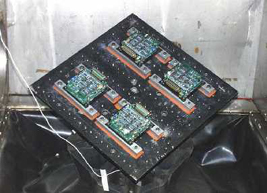

Environmental Stress Screening
Quanta's Capabilities
● Environmental Screening
● Patented ESS System
● Largest ESS Test System capable of handling a 7 foot rack
● ESS Seminars
● ESS Consulting
PurposeHALT, HASS, POS, and ESS stress systems process currently being employed to accelerate the discovery of design weaknesses and to find manufacturing defects in products before a product is manufactured and introduced. This can result in reduced product costs, improved product reliability, accelerated time to market, and reduced warranty costs. Quanta's Patented
|

1. Extremely non-uniform impact intensity throughout the table. For some tables, impact magnitudes vary up to 275% for different locations on the table (see Quanta's "Environmental Stress Screening Equipment: Search, Evaluation, Design, Experimentation" in Test Engineering and Management Aug/Sept 1994).
2. Energy level is too low to be effective for screening in the frequency range at which most products have their resonant frequencies. Also, damaging energy levels occur up to 20,000 Hz.
To avoid these problems, Quanta has developed a new ESS system that can be used with any electromagnetic or hydraulic shaker. Its uniqueness justified the award of a U.S. Patent in 1997 (U.S. Patent Number 05650569).
HALT - Highly Accelerated Life Testing |
 |

Product Line Screening System
Quanta's newest invention is a Production Line ESS system. It employs a pair of accordion support structures, for multiple PCBs, that take turns moving onto a shaker head expander and into a fast ramping chamber. The system ramps quickly between high and low temperatures and vibrates at the temperature extremes to produce a highly accelerated stress screening on the product, and total test time per run is about 10 minutes. This cutting edge technology is a must for wringing out infant mortality on your product more efficiently than current methods allow. Contact Quanta Laboratories for a detailed description of this patented system that will reduce the time and cost for screening your product